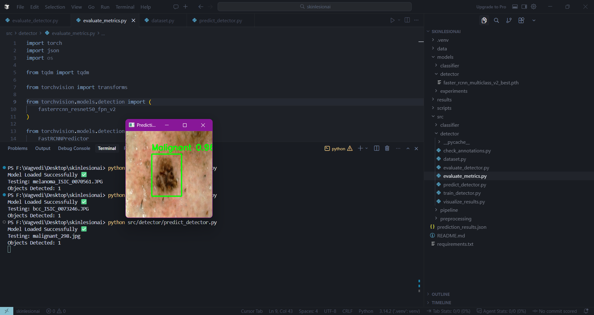

Problem Statement
The clinical need for lesion localization
Manual review of dermoscopic images requires specialist time and is difficult to scale. While classification models can label an entire image, they cannot identify where the lesion is located — a critical requirement for clinical triage and diagnosis.
This project addresses the need for a system that provides both lesion localization and disease classification. A pure image classifier emits a single global label with no spatial information, which is insufficient for clinical applications where clinicians need to see exactly which region the model is analyzing.
Classification limitation: Cannot answer where the lesion is. No bounding box to inspect, overlay, or evaluate with localization metrics.
System requirement
The project requires object detection — a system that outputs both bounding box coordinates and a disease class label for each detected lesion.
Input Skin Image
↓
Lesion Localization (bounding box coordinates)
↓
Disease Classification (one of 10 classes)
↓
Prediction Output: { box, class, score }
Project Objective
Build an end-to-end 10-class skin lesion detection system
The goal is to create a prototype system that can detect and classify skin lesions from dermoscopic images across 10 disease categories using Faster R-CNN with ResNet50 FPN backbone.
This system is designed as a research/prototype project to demonstrate the feasibility of multi-class skin lesion detection. It is not clinically validated or production-ready, but provides a foundation for further development and validation.
Key objectives
- Detect and localize skin lesions with bounding boxes
- Classify lesions into 10 disease categories
- Build a complete data processing pipeline from raw datasets to training-ready format
- Train and evaluate a Faster R-CNN model
- Demonstrate prediction on unseen images
Technology Stack
Python
PyTorch
Torchvision
Faster R-CNN
ResNet50 FPN
CVAT
COCO Evaluation
Dataset and Classes
Evolution from 2-class to 10-class taxonomy
The project evolved from an initial two-class setup to the final 10-class taxonomy. This progression was part of the incremental development approach, where the detection pipeline was first established with a simpler problem before expanding to the full multi-class system.
Initial two-class setup
The project initially started with only two classes to establish the first working detection pipeline:
- Benign — non-cancerous skin lesions
- Malignant — cancerous or potentially cancerous lesions
This initial setup allowed for rapid prototyping and validation of the core detection pipeline before expanding to the more complex 10-class problem.
Initial Two-Class Dataset Screenshot
Initial dataset preparation for benign vs malignant classification
Final 10-class taxonomy
After validating the initial pipeline, the project was expanded to include 10 disease categories. The project uses publicly available Kaggle skin-lesion datasets, consolidated into a unified taxonomy. Each class represents a specific skin disease or lesion type.
10-class taxonomy
Internal code maps each name to an integer id (0–9):
ID_TO_NAME = {
0: "benign", 1: "malignant",
2: "ak", 3: "bcc",
4: "dermatofibroma", 5: "melanoma",
6: "nevus", 7: "pigmented_bk",
8: "scc", 9: "vascular"
}
Class descriptions
| benign |
Benign skin lesions — non-cancerous growths |
| malignant |
Malignant lesions — cancerous or potentially cancerous |
| ak |
Actinic Keratosis — precancerous skin patches |
| bcc |
Basal Cell Carcinoma — common type of skin cancer |
| dermatofibroma |
Dermatofibroma — benign skin nodules |
| melanoma |
Melanoma — serious form of skin cancer |
| nevus |
Nevus — common moles, typically benign |
| pigmented_bk |
Pigmented Benign Keratosis — benign pigmented lesions |
| scc |
Squamous Cell Carcinoma — another common skin cancer type |
| vascular |
Vascular Lesions — blood vessel-related skin conditions |
Data sources
The dataset was constructed from multiple public sources, each with different folder structures, class IDs, and annotation formats. This required careful merging and remapping to create a unified training set.
Data Processing Pipeline
Converting heterogeneous datasets into a unified training set
The data pipeline transforms multiple public sources with different structures, class IDs, and annotation formats into a single clean Faster R-CNN training dataset. This is the backbone of the project.
📁
01 · ingest
Raw Dataset Collection
Multiple public skin-lesion archives from Kaggle, each with its own naming and split conventions. Kept immutable as the source of truth.
Challenges: different folder structures, class numbering, and formats (YOLO, COCO, custom).
↓
🏷
02 · annotate
CVAT Annotation → YOLO Export
CVAT was used to draw bounding boxes and assign disease labels. Exports written as one YOLO .txt per image.
# YOLO label line format (normalized 0–1)
class_id x_center y_center width height
# Example: melanoma (id=5) box
5 0.60 0.55 0.30 0.25
Quality note: annotation quality directly affects detection performance.
↓
🗂
03 · layout
Dataset Organization
Images and labels placed into a consistent directory scheme before any merge.
Purpose: give later scripts a predictable path to every sample.
↓
☑
04 · quality
Annotation Verification
Checked every image has a matching label file and that boxes are readable.
Purpose: fail early on missing annotations instead of silently during training.
↓
#
05 · taxonomy
Class ID Remapping
Source-specific class numbers rewritten onto the shared 10-class id space.
Purpose: prevent two diseases sharing an id, or one disease splitting across ids.
↓
＋
06 · union
Dataset Merge + Duplicate Handling
Sources combined; colliding filenames prefixed by source to prevent silent sample loss.
Purpose: one training corpus instead of several incompatible loaders.
↓
C
07 · format
YOLO → COCO Conversion
Normalized YOLO boxes converted to absolute COCO xywh + category lists.
Purpose: torchvision Faster R-CNN and pycocotools both expect COCO JSON.
↓
▶
08 · train
Faster R-CNN Training Dataset
Processed images + train.json / val.json / test.json — ready for the detector loader.
Purpose: reproducible input to training pipeline.
Data preprocessing steps
Before training, the raw dataset went through multiple preprocessing and quality checks to ensure only clean, well-annotated samples reached the model.
1 · Duplicate Image Removal
Duplicate images were identified and removed using hash comparison to avoid repeated samples affecting model learning.
2 · Blur and Quality Check
Low-quality and blurred images were detected using Laplacian variance and removed because unclear lesion details can affect detection performance.
3 · Image-Label Verification
Every image was verified to have a corresponding annotation file to prevent silent data loss during training.
4 · Annotation Validation
Annotation files were checked to ensure they followed the correct YOLO format and contained valid bounding box values.
5 · Dataset Distribution Check
Class distribution was verified after preprocessing to ensure all 10 disease categories were correctly included before training.
Preprocessing workflow
Raw Dataset
↓
Duplicate Removal
↓
Blur & Quality Check
↓
Image-Label Verification
↓
Annotation Validation
↓
Final Clean Dataset
Engineering Challenges & Debugging Journey
The iterative development process
The project was not built in a single linear pass. Instead, it progressed through multiple stages of development, validation, debugging, and refinement. This section documents the key engineering challenges encountered and how they were resolved.
Project evolution timeline
1
PHASE 1
Initial 2-Class Setup
Project began with benign vs malignant classification only. Dataset prepared and initial Faster R-CNN model trained.
↓
2
PHASE 2
First Major Bug: Bounding Box Issue
Evaluation revealed that predicted bounding boxes were appearing in approximately the same position across different images, indicating a pipeline problem.
↓
3
RESOLUTION
Debugged & Corrected Localization
Traced issue through data/annotation/prediction pipeline, identified root cause, corrected the problem, and reran evaluation.
↓
4
PHASE 3
Expanded to 10 Classes
After validating the basic pipeline, project expanded from 2 classes to 10 classes with additional disease categories.
↓
5
PHASE 4
Second Major Bug: Missing Pigmented BK
Dataset validation revealed Pigmented BK showed 0 samples in processed dataset despite raw images being present.
↓
6
RESOLUTION
Debugged Dataset Merge Process
Fixed image-label mapping and merging process, regenerated dataset, and verified Pigmented BK correctly included.
↓
7
FINAL
Final Training & Evaluation
Trained final 10-class model and achieved the reported evaluation metrics.
Challenge 1 — Incorrect / Repeated Bounding Box Localization
The problem
During evaluation of the initial two-class model (benign vs malignant), a serious localization issue was discovered through visual inspection of predictions.
Issue detected: Predicted bounding boxes were appearing in approximately the same position across different images, rather than adapting to the actual lesion locations in each image.
This was a critical finding because it indicated that the issue was not simply a matter of model accuracy — the localization/prediction pipeline itself had a fundamental problem that needed investigation.
Investigation and resolution
A systematic investigation covered dataset folders, image–label pairs, class mappings, and the merge scripts:
- Confirmed raw Pigmented BK images were on disk.
- Confirmed matching YOLO label files existed.
- Compared image stems to label stems for naming mismatches.
- Traced merge logs for skipped “missing label” paths.
- Walked class-id remapping to rule out silent remapping to another class
- Examined the image-label path mapping logic in the merge script
# Audit class distribution across processed labels
from collections import Counter
counts = Counter()
for lbl in label_dir.glob("*.txt"):
for line in open(lbl):
counts[int(line.split()[0])] += 1
for cls_id, name in ID_TO_NAME.items():
print(f"{name:<20}: {counts.get(cls_id, 0)}")
Root cause
Root cause identified: Image and label mapping was not handled correctly during dataset merging. Some sources nested labels in subdirectories (for example labels/labels/Train) while the merge logic assumed a flat label directory structure. Pigmented BK image-label pairs were being skipped and never copied into the processed dataset.
Resolution
Fix applied:
- Corrected image–label mapping logic to handle nested label search paths
- Updated the merge pipeline so pairs are copied together and filename collisions get a source prefix
- Regenerated the entire processed dataset from scratch
- Repeated the YOLO-to-COCO conversion with the corrected dataset
- Verified class distribution again before starting training
Before / after comparison
Before fix
pigmented_bk : 0 samples
After fix
pigmented_bk : 170 samples
Verified final distribution
Post-fix class distribution (processed set):
benign : 176
malignant : 181
ak : 215
bcc : 208
dermatofibroma: 190
melanoma : 188
nevus : 196
pigmented_bk : 170
scc : 191
vascular : 215
With Pigmented BK correctly included at 170 samples, the dataset was ready for training. This debugging process highlights the importance of thorough dataset validation before model training.
Dataset Distribution Screenshot (After Fix)
Verified class distribution after fixing the Pigmented BK dataset issue — Pigmented BK correctly shows 170 samples
Engineering Challenges & Debugging Journey
The iterative development process
The project was not built in a single linear pass. Instead, it progressed through multiple stages of development, validation, debugging, and refinement. This section documents the key engineering challenges encountered and how they were resolved.
Project evolution timeline
1
PHASE 1
Initial 2-Class Setup
Project began with benign vs malignant classification only. Dataset prepared and initial Faster R-CNN model trained.
↓
2
PHASE 2
First Major Bug: Bounding Box Issue
Evaluation revealed that predicted bounding boxes were appearing in approximately the same position across different images, indicating a pipeline problem.
↓
3
RESOLUTION
Debugged & Corrected Localization
Traced issue through data/annotation/prediction pipeline, identified root cause, corrected the problem, and reran evaluation.
↓
4
PHASE 3
Expanded to 10 Classes
After validating the basic pipeline, project expanded from 2 classes to 10 classes with additional disease categories.
↓
5
PHASE 4
Second Major Bug: Missing Pigmented BK
Dataset validation revealed Pigmented BK showed 0 samples in processed dataset despite raw images being present.
↓
6
RESOLUTION
Debugged Dataset Merge Process
Fixed image-label mapping and merging process, regenerated dataset, and verified Pigmented BK correctly included.
↓
7
FINAL
Final Training & Evaluation
Trained final 10-class model and achieved the reported evaluation metrics.
Challenge 1 — Incorrect / Repeated Bounding Box Localization
The problem
During evaluation of the initial two-class model (benign vs malignant), a serious localization issue was discovered through visual inspection of predictions.
Issue detected: Predicted bounding boxes were appearing in approximately the same position across different images, rather than adapting to the actual lesion locations in each image.
This was a critical finding because it indicated that the issue was not simply a matter of model accuracy — the localization/prediction pipeline itself had a fundamental problem that needed investigation.
Investigation and resolution
Instead of continuing with the flawed results, the entire data/annotation/prediction pipeline was investigated to identify why the localization output was incorrect.
- Traced the issue through the data loading and preprocessing pipeline
- Examined annotation format and coordinate transformations
- Checked the prediction output generation and post-processing
- Identified an issue in the data/annotation/prediction pipeline that was causing the repeated positioning
- Corrected the underlying issue
- Reran the necessary processing and evaluation steps
After correction, the prediction pipeline was able to produce image-specific localization rather than repeatedly placing the box in the same position. This debugging process was essential because it ensured the detection pipeline was fundamentally sound before expanding to the more complex 10-class problem.
Bounding Box Issue Screenshot
Visual evidence of the repeated bounding box problem across different images
Corrected Localization Screenshot
Prediction results after fixing the bounding box localization issue
Challenge 2 — Missing Pigmented BK Samples
The problem
After successfully fixing the initial localization issue and expanding from 2 classes to 10 classes, dataset validation revealed another critical issue.
Issue detected: Pigmented Benign Keratosis (Pigmented BK) was showing 0 samples in the processed dataset, even though the raw images were present in the source dataset.
This was unexpected because the raw Pigmented BK images and their corresponding label files existed in the source data. The class was disappearing somewhere during the dataset merging and processing pipeline.
Investigation process
A systematic investigation was conducted to trace where the Pigmented BK samples were being lost:
- Confirmed raw Pigmented BK images were present on disk
- Confirmed matching YOLO label files existed for those images
- Checked image-label file name matching and pairing
- Examined class ID mapping and remapping logic
- Traced the dataset merging process and logs
- Analyzed the resulting class distribution after each processing step
Root cause
Root cause identified: The dataset merging process was not correctly handling the source dataset's label folder structure. Some sources nested labels in subdirectories while the merge logic assumed a flat label directory structure, causing Pigmented BK image-label pairs to be skipped during the merge.
Resolution
Fix applied:
- Corrected the image-label mapping logic to handle nested label search paths
- Updated the merge pipeline so pairs are copied together and filename collisions get a source prefix
- Removed the existing processed dataset
- Regenerated the entire processed dataset from scratch
- Repeated the YOLO-to-COCO conversion with the corrected dataset
- Verified the class distribution again before training
Before / after comparison
Before fix
pigmented_bk : 0 samples
Investigation: Raw images present → labels checked → mapping checked → merge process checked → issue identified and fixed
After fix
pigmented_bk : 170 samples
Dataset regenerated → annotation conversion repeated → class distribution verified → ready for training
Pigmented BK = 0 Screenshot
Evidence of the missing Pigmented BK class before the fix
Final verified distribution
Post-fix class distribution (processed set):
benign : 176
malignant : 181
ak : 215
bcc : 208
dermatofibroma: 190
melanoma : 188
nevus : 196
pigmented_bk : 170
scc : 191
vascular : 215
With Pigmented BK correctly included at 170 samples, the dataset was validated and ready for the final training and evaluation workflow. This debugging process highlights the importance of thorough dataset validation at each stage of development.
Key engineering insights
These debugging experiences demonstrate that successful machine learning engineering requires:
- Validation at each stage — Not just training, but evaluating whether outputs behave as expected
- Visual inspection — Looking at actual predictions can reveal issues that metrics alone might miss
- Systematic investigation — Tracing problems through the entire pipeline rather than making assumptions
- Incremental development — Starting simple and expanding complexity after validating each component
Why Faster R-CNN?
The need for object detection over classification
The project requires both lesion localization and disease classification. A pure image classifier only provides an image-level class — it cannot identify where the lesion is located in the image.
A classifier cannot answer where the lesion is. There is no bounding box to inspect, overlay, or evaluate with localization metrics.
Model evolution: from 2-class to 10-class
The Faster R-CNN architecture was first implemented and validated with the initial 2-class setup (benign vs malignant). After establishing that the detection pipeline was working correctly, the model was expanded to handle the full 10-class taxonomy by replacing the classification head.
Why object detection was required
Classification only gives an image-level class. This project also needs lesion localization. Therefore Faster R-CNN was used to provide both bounding boxes and class predictions.
Why Faster R-CNN specifically?
| Localization |
Faster R-CNN is built around region proposals and box regression — every output is a spatial prediction, not a global logit. |
| Precision |
Two-stage detectors produce tighter boxes than single-stage models, which matters for precise lesion boundaries. |
| Transfer learning |
COCO-pretrained ResNet50 backbone gives strong low-level features even when the skin-lesion corpus is modest in size. |
| Multi-scale (FPN) |
Feature Pyramid Network fuses P2–P6 feature maps so small and large lesions are both detectable without resizing tricks. |
Chosen model
Faster R-CNN ResNet50 FPN v2 (fasterrcnn_resnet50_fpn_v2) — COCO-pretrained backbone and RPN, with the classification head replaced for 11 outputs (background + 10 diseases).
Model Architecture
Faster R-CNN ResNet50 FPN components
The model combines several proven components to create an effective object detection system for skin lesions.
Architecture overview
Input Image (H × W × 3)
↓
ResNet50 Backbone → C2, C3, C4, C5 feature maps
↓
FPN → P2–P6 (multi-scale lateral connections)
↓
RPN → objectness score + Δbox per anchor (proposals)
↓
ROI Align → 7×7 pooled features per proposal
↓
FC layers → class logits + box deltas
↓
{ box [x1,y1,x2,y2], label, score }
Component explanations
| ResNet50 |
Hierarchical visual features. Pretrained on ImageNet via COCO weights — low-level edges and textures transfer well to dermoscopy. |
| FPN |
Lateral + top-down connections produce P2–P6. Larger feature maps (P2) cover small lesions; P5/P6 cover large ones. |
| RPN |
Slides anchors over every FPN level. Outputs objectness (lesion vs background) and a rough box for each proposal passed to ROI heads. |
| ROI Align |
Bilinear interpolation — avoids the quantisation artefacts of ROI Pooling. Produces fixed 7×7 feature crops per proposal. |
| FC predictor |
Two fully-connected layers output final class scores (11-way softmax) and box regression deltas simultaneously. |
Head replacement for 10 classes
The COCO-pretrained classification head is replaced to output 11 classes (background + 10 disease categories):
from torchvision.models.detection import fasterrcnn_resnet50_fpn_v2
from torchvision.models.detection.faster_rcnn import FastRCNNPredictor
model = fasterrcnn_resnet50_fpn_v2(weights="DEFAULT")
# Replace head: background + 10 lesion classes
in_features = model.roi_heads.box_predictor.cls_score.in_features
model.roi_heads.box_predictor = FastRCNNPredictor(in_features, num_classes=11)
Training Configuration
Final training setup
The model was trained with the following configuration after dataset preparation and debugging were complete.
| Model | Faster R-CNN ResNet50 FPN |
|---|
| Classes | 10 disease classes + background (11 total) |
|---|
| Epochs | 80 |
|---|
| Batch size | 2 |
|---|
| Optimizer | SGD (lr = 0.001, momentum = 0.9, weight_decay = 0.0005) |
|---|
| Scheduler | StepLR (step_size = 25, gamma = 0.1) |
|---|
| GPU | CUDA acceleration, mixed precision when available |
|---|
| Checkpoint | Best checkpoint saved based on validation loss |
|---|
Training workflow
Dataset Loader
↓
Forward Pass
↓
Loss Calculation
↓
Backpropagation
↓
Checkpoint Saving
The best checkpoint is selected by validation loss and reused for test prediction and COCO evaluation.
Training Completion Screenshot
Final training completion after 80 epochs
Evaluation Methodology
Final performance results
After training, the detector was evaluated on the unseen test split using COCO evaluation metrics. Predictions were written to prediction_results.json and scored with pycocotools.
Final Results
Test Images: 257
| mAP@0.5 | 60.2% |
|---|
| mAP@0.5:0.95 | 34.4% |
|---|
| mAP@0.75 | 33.6% |
|---|
| AR@100 | 48.6% |
|---|
mAP@0.5:0.95 is stricter because it evaluates across multiple IoU thresholds (from 0.5 to 0.95 in steps of 0.05), requiring precise localization. mAP@0.5 is more lenient, rewarding predictions when the box overlaps ground truth by at least 0.5 IoU.
Evaluation Metrics Screenshot
Final COCO evaluation metrics on the test dataset
Class-wise detection results
Performance breakdown across individual skin lesion categories on the test set.
| Disease Class |
Detected Samples |
Total Samples |
Recall (%) |
| Benign |
24 |
27 |
88.89% |
| Malignant |
25 |
27 |
92.59% |
| Actinic Keratosis |
21 |
26 |
80.77% |
| Basal Cell Carcinoma |
21 |
43 |
48.84% |
| Dermatofibroma |
8 |
13 |
61.54% |
| Melanoma |
17 |
25 |
68.00% |
| Nevus |
22 |
27 |
81.48% |
| Pigmented Benign Keratosis |
23 |
31 |
74.19% |
| Squamous Cell Carcinoma |
24 |
34 |
70.59% |
| Vascular Lesions |
23 |
25 |
92.00% |
Performance observations
The model shows strong detection performance for classes such as Malignant (92.59%), Vascular (92.00%), and Benign (88.89%). Lower performance was observed for Basal Cell Carcinoma (48.84%) and Dermatofibroma (61.54%), indicating the need for additional data balancing and targeted improvements for these categories.
Evaluation Method: Class-wise recall was calculated by comparing predicted detections against ground-truth annotations on the unseen test dataset.
Prediction / Demo
Testing on unseen images
The trained model was tested on unseen skin lesion images to demonstrate its detection capabilities in a realistic inference scenario.
Initial binary classification work
When the project first started, work focused on a binary classification problem distinguishing between benign and malignant lesions only. This initial phase helped establish the detection pipeline before expanding to the full 10-class taxonomy.
Prediction output
For each input image, the model outputs:
- Predicted lesion class — one of the 10 disease categories (or benign/malignant in initial work)
- Confidence score — model's confidence in the prediction
- Bounding box — [x1, y1, x2, y2] coordinates localizing the lesion
Prediction Output:
{
"box": [x1, y1, x2, y2],
"label": "disease_class_name",
"score": 0.95
}
Successful predictions
The model successfully localizes lesions with accurate bounding boxes and correct class predictions:

Correct bounding box prediction — lesion accurately localized with appropriate confidence score

Overall prediction results showing multiple detections
Prediction challenges
The model sometimes produces incorrect bounding boxes or misclassifications, highlighting areas for improvement:

Incorrect bounding box — box does not accurately capture the lesion region

Incorrect bounding box example — poor localization of the lesion

Incorrect bounding box example — box misalignment with actual lesion
These prediction examples show both the strengths and limitations of the current model, providing insights for future improvements in bounding box accuracy and classification precision.
Challenges
Actual challenges encountered during the project
Several technical challenges were encountered and resolved during the development of this project.
Data integration challenges
- Combining datasets with different structures — Multiple sources had different folder layouts, requiring custom merge logic
- Different class mappings — Each source used different class IDs, requiring careful remapping to a unified 10-class space
- Annotation validation — Ensuring all annotations followed the correct format and contained valid bounding boxes
Dataset debugging challenges
- Missing Pigmented BK samples — A critical bug where Pigmented Benign Keratosis samples were being lost during dataset merging
- Image-label mapping issues — Nested directory structures in source datasets caused pairs to be skipped
Performance challenges
- Differences in class-wise performance — Some classes (BCC, Dermatofibroma) showed significantly lower recall than others
- Dataset imbalance — Variations in sample sizes across classes may affect model performance
Future Improvements
Areas for future development
Based on the evaluation results and challenges encountered, several areas have been identified for future improvement.
Performance improvements
- Improve lower-performing classes — Focus on Basal Cell Carcinoma and Dermatofibroma which showed lower recall
- Investigate dataset balancing — Address class imbalance through targeted data collection or controlled oversampling
- Targeted augmentation — Implement class-aware augmentation (geometric and photometric) without breaking box coordinates
Model optimization
- Hyperparameter tuning — Explore learning-rate schedules, anchor configurations, and NMS thresholds
- Additional data for weaker categories — Collect more samples for underperforming disease categories
Validation and deployment
- External validation — Test the model on clinical datasets from sources not included in the original merge pipeline
- Clinical evaluation — Conduct thorough clinical validation before any production deployment
These improvements have not yet been implemented and represent planned future work for the project.
Conclusion
Project summary
This project successfully built an end-to-end 10-class skin lesion detection pipeline using Faster R-CNN with ResNet50 FPN backbone.
Key achievements
- Built a complete data processing pipeline from heterogeneous raw datasets to unified training format
- Implemented dataset validation and debugging, including resolution of the missing Pigmented BK class issue
- Trained a Faster R-CNN ResNet50 FPN model for 10-class skin lesion detection
- Achieved final mAP@0.5 of 60.2% on the test set
- Demonstrated prediction capability on unseen images
Final metrics
| Test Images | 257 |
|---|
| mAP@0.5 | 60.2% |
|---|
| mAP@0.5:0.95 | 34.4% |
|---|
| mAP@0.75 | 33.6% |
|---|
| AR@100 | 48.6% |
|---|
Project status
This is a research/prototype project demonstrating the feasibility of multi-class skin lesion detection. It is not clinically validated or production-ready. Clear areas have been identified for future improvement, particularly for lower-performing classes and dataset balancing.
Technical summary
The project demonstrates a complete machine learning pipeline: from data collection and preprocessing, through model training and evaluation, to prediction on unseen data. The debugging process for the Pigmented BK issue highlights the importance of thorough dataset validation in machine learning projects.